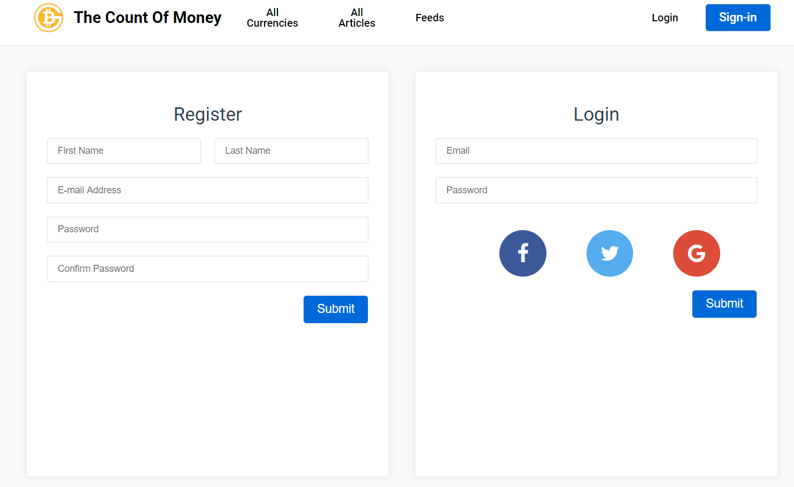
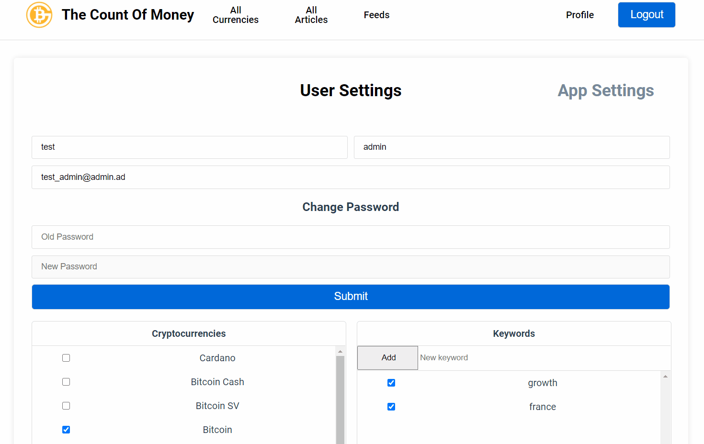
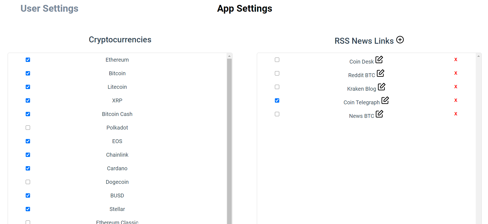
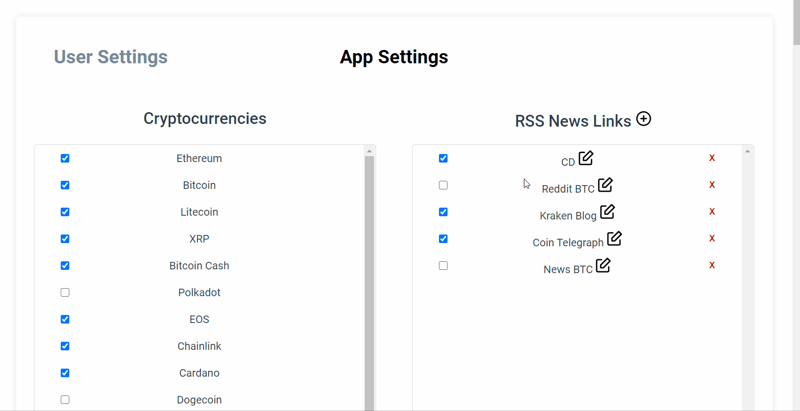
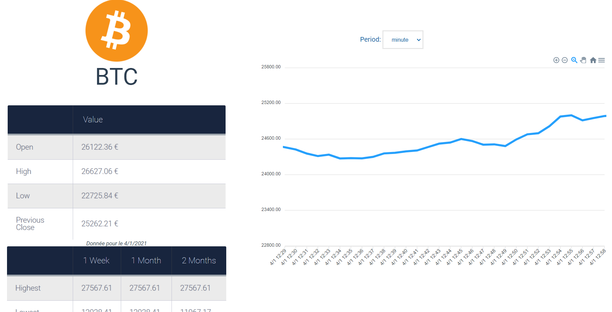

Count of money
I made this project for a web project at school.
I did it in 3 weeks and I did with 3 classmates.
This is a crypto currency stocks application.
In this app, we can look up crypto-currencies and see their values in numbers and graphs.
I also built an automatic article aggregator that scrapes many online magazines and stores every article in the same format.
A background task checks all saved RSS feeds every 30 minutes to fetch new posts automatically.
Main used technologies are NodeJs, Express.js with Firebase database, Vue.js and Docker and Azure for deployment.
Count of money
J'ai réalisé ce projet pour un projet web à l'école.
C'était un projet en groupe qui a duré 3 semaines
C'est une application web de stocks de crypto-monnaies.
Dedans, on peut suivre la valeur des différentes monnaies sous forme de chiffres et de graphiques.
J'ai aussi conçu un agrégateur d'articles qui récupère de nombreux journaux en ligne et uniformise leur présentation.
Une tâche planifiée vérifie toutes les 30 minutes l'ensemble des flux RSS enregistrés et ajoute automatiquement les nouveaux articles.
Les principales technologies utilisées sont NodeJs, Express.js avec Firebase comme base de données, Vue.js pour le front et Docker et Azure pour le déploiement.

A brief presentation of main features
Présentation
Application architecture
Architecture de l'application
-The backend is an Express.js REST API. -The frontend is a Vue.js application that communicated with the API, but is completely separated from it. -Data is stored in a Firebase database.
-Le backend est une API REST utilisant Express.js. -Le frontend est une application Vue.js qui communique avec l'API mais qui en est séparée. -Les données sont stockées dans une base de données Firebase.
Login and register
Connexion et inscription

Users can login and signup from this form. This sends a sign in / signup request to the API that accepts or rejects it. When the user isn't authentified, all routes except Home and articles lead to this page, as only authentified users can access crypto stocks. Of course the application uses password hash and other security features...
Users can always change their informations in the settings page. They can also choose the crypto-currencies and keywords they are interested in so they always have an eye on their crypto values and better article suggestions.
Les utilisateurs peuvent se connecter et s'inscrire depuis ce formulaire . Il envoie une requete à l'API qui accepte ou pas la connexion / inscription. Quand l'utilisateur n'est pas authentifié tous les routes sauf l'index et la page des articles mènent à cette page, car il faut se connecter pour avoir accès aux cours des cryptos. L'application utilise des features de sécurité comme le hash etc...
Les utilisateurs peuvent ensuite changer leurs informations dans les paramêtres Ils peuvent aussi choisir les crypto-monnaies ainsi que les mots clé qui les interessent afin d'avoir toujours un oeil sur les valeurs de leurs cryptos et de meilleures suggestions d'articles.

Articles
Admin part
Partie admin
Admins can access an app settings page where they decide which currencies are available for users and manage the list of crypto magazines. They can add or remove RSS feeds at any time.
Les admins peuvent accéder à une page de paramètres où ils choisissent les crypto‑monnaies disponibles pour les utilisateurs et gèrent la liste des magazines. Ils peuvent ajouter ou supprimer des flux RSS à tout moment.

The application checks these feeds every 30 minutes. When a new entry appears, it scrapes the full article with site specific rules and saves it in the database with a unified style.
L'application vérifie ces flux toutes les 30 minutes. Lorsqu'un nouvel article apparaît, il est scrappé grâce aux règles dédiées puis enregistré dans la base de données avec un format unifié.
Because each RSS feed is different, I built an RSS mapping tool that makes it quick and safe to link any feed to our format.
Comme chaque flux RSS a sa propre structure, j'ai développé un outil de mappage RSS pour lier facilement un nouveau flux à notre modèle sans erreur.
RSS Mapping tool
Outil de mappage RSS

Users can consult the news from this page:
- Latest : shows the most recent articles with a "see more" button at the bottom.
- Keywords : lists the articles that match the user's saved keywords.
- Search : finds all articles containing the keywords entered by the user.
Clicking on an article opens it in a dedicated page. Thanks to the scraping and normalization process, all articles share the same layout.
Les utilisateurs peuvent consulter les actualités depuis cette page :
- Latest : liste les articles les plus récents avec un bouton "voir plus" en bas.
- Keywords : affiche les articles correspondant aux mots clé enregistrés par l'utilisateur.
- Search : recherche dans tous les articles ceux contenant les mots clé saisis.
En cliquant sur un article, il s'ouvre dans une page dédiée. Tous les articles gardent la même présentation grâce au travail de normalisation.

An opened article looks like this:
Voici à quoi ressemble un article ouvert :

Currencies
Crypto-monnaies
Here's the crypto-currencies page. It lists all active (selected by the admin) currencies In the "my currencies" onglet the user can access his favorite currencies. It also has a search bar. The user can also access a currency's details by clicking it.
Voici la page des crypto-monnaies. Elle liste toutes les crypto-monnaies actives (par l'admin) Dans l'onglet "my currencies" l'utilisateur peut accéder à ses crypto-monnaies favorites Il y a aussi un outil recherche. L'utilisateur peut aussi accéder aux détails d'une crypto-monnaie en appuyant dessus.

Details :
Details :

Mobile
The application is fully responsive and adapts to device's screen.
L'application est responsive et s'adapte à l'écran de l'utilisateur.